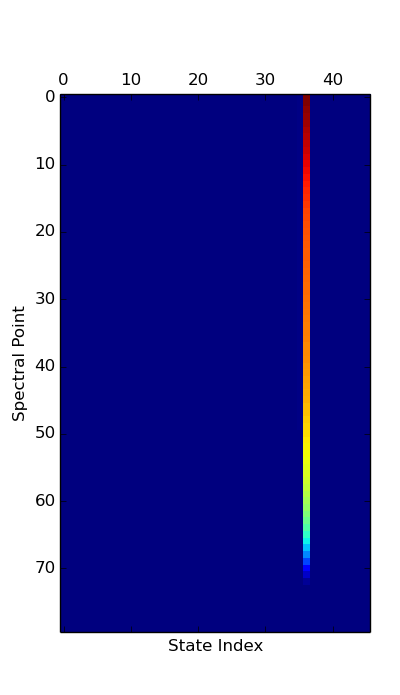

Python Wrappers¶
Warning
This information is likely outdated and needs updating
We have wrappers that allow the C+ Full Physics library to be used in Python.
The exact same doxygen documentation is available in Python using the standard Python help system, in particular you can issue a command such as help(AtmosphereOco).
Check the Python documentation generated using doxygen for information what classes are available through Python.
The wrappers are straight Python, but for interactive purposes use IPython, as well as the matplotlib and scipy libraries. If you aren’t familiar when them, you can take a look at their getting started guide.
Building¶
To use the Python bindings, you need to do a full install, not just a make all. This is because Python needs to see the libraries in a particular directory structure that gets created with the install. So you would build with:
$ make all && make install
Running¶
After building, you need to make sure that the Python path is set to point to the installed library. You can do this using the setup script installed in the install area:
$ source ./install/setup_fp_env.sh
Examples¶
First you will need to load the correct environmental variables then load a Python shell:
$ source ./install/setup_fp_env.sh
$ ipython --matplotlib auto
The easiest way to get started is by using a pre-existing Lua configuration:
In [1]: from full_physics import *
In [2]: from matplotlib.pylab import *
In [3]: conf = L2FpConfigurationLua('/path/to/existing_run/config.lua')
Add some information about getting the right enviromental variables made available.
Example 1 - Plotting Solar Spectrum¶
Get help on what conf is and can do:
In [3]: help(conf)
If you are using IPython, you can just use a ? after the object to get help:
In [3]: conf?
The solar model object is one of several spectrum effects, arbitrary operators on spectrum before instrument effects have been processed. It will probably be at index 0 of the spectrum effects list. Get help on what solar model is and can do:
In [4]: help(conf.forward_model.speceff_val(0, 0))
The second index above is the band index. Note that this is pretty much the same documentation as found in the Doxygen Documentation, or the Python Documentation but it can be convenient to do this in IPython without going to a browser.
We can plot the solar model with a couple of short commands as follows:
In [5]: band = 0
In [6]: spec_dom = conf.forward_model.instrument.pixel_spectral_domain(band)
In [7]: solar_spec = conf.forward_model.speceff_val(0, band).solar_spectrum(spec_dom)
In [8]: plot(solar_spec.wavenumber, solar_spec.value)
Example 2 - Forward model without Jacobian¶
Run forward model and get radiances only for all the bands:
In [9]: r = conf.forward_model.radiance_all(True)
The boolean argument to radiance_all tells the code to skip Jacobian calculations.
Example 3 - Forward model with Jacobian¶
Run forward model and get radiance and Jacobian (takes longer to run):
In [10]: r = conf.forward_model.radiance_all()
Example 4 - Radiative Transfer¶
Run just the radiative transfer w/o applying solar or instrument model:
In [11]: band = 0
In [12]: ils_hw = conf.forward_model.instrument.ils_half_width(band)
In [13]: spec_pix = conf.forward_model.instrument.pixel_spectral_domain(band)
In [14]: spec_samp = \
conf.forward_model.spectrum_sampling.spectral_domain(band, spec_pix, ils_hw)
In [15]: rrt = conf.forward_model.radiative_transfer.reflectance(spec_samp, band, True)
In [16]: plot(rrt.spectral_domain.data, rrt.spectral_range.data)
We can also run the RT with Jacobian not disabled and then plot up a portion of the spectral data (first dim) for all state vector types:
In [17]: rrt = conf.forward_model.radiative_transfer.reflectance(spec_samp, band)
In [18]: jac = rrt.spectral_range.data_ad.jacobian
In [19]: matshow(jac[0:80, :], cmap=cm.jet)
In [20]: xlabel("State Index")
In [21]: ylabel("Spectral Point")
This shows that the Jacobian is dominated by one value:
Look at vector and find largest one, and name of it:
In [22]: conf.forward_model.state_vector.state_vector_name[argmax(jac[0,:])]
Out[22]: 'Ground Lambertian A-Band Albedo Parm 2'
Example 5 - Apply Solar and Instrument Models¶
To apply the solar model and the instrument model along with other effects we would use the RT spectrum from the last example:
In [26]: rinst = conf.forward_model.apply_spectrum_corrections(rrt, band)
In [27]: plot(rinst.spectral_domain.data, rinst.spectral_range.data)
Example 6 - Use Generic Solver¶
DEPRECATED
Python SciPy comes with some generic solvers, including one based on the standard Fortran minpack routines. We have a version of the cost function that uses the more standard format of embedding the a priori values, a priori covariance matrix, and radiance uncertainty:
As an example of using this:
import scipy.optimize
cost_func = FmStandardFormatCostFunction(conf.forward_model(), \
conf.spectral_window_apply().radiance(), \
conf.spectral_window_apply().radiance_uncertainty(), \
conf.initial_guess().apriori(), \
conf.initial_guess().apriori_covariance())
x = conf.initial_guess().initial_guess()
cf = lambda x: cost_func.residual(x)
jf = lambda x: cost_func.jacobian(x)
yinitial = cf(conf.initial_guess().initial_guess())
print "Initial chisq: %f" % (sum(yinitial * yinitial)/ yinitial.size)
xsol, ier = scipy.optimize.leastsq(cf, x, Dfun=jf, maxfev=10)
if(ier < 0):
print "An error occured"
ysol = cf(xsol)
print "Final chisq: %f" % (sum(ysol * ysol)/ ysol.size)
This print out:
Initial chisq: 131.571840
Final chisq: 18.775889
NOTE: This example only allows 10 evaluations of the cost function, and uses the default stopping criteria. This is really meant as a quick example, rather than saying this is a particularly good solver. Also, for C+ we were thinking of investigating the GSL. The GSL has python wrappers (PyGSL), and can be used as an alternative to the scipy solver. The standard Level 2 Full Physics solver gets a chisq of 0.614842 in 5 evaluations, so this example obviously needs some tuning to work for real.
Python Callback¶
To be documented - providing Python classes to be used in place of C+ (e.g., prototype a new LSI or solar model and test in retrieval).